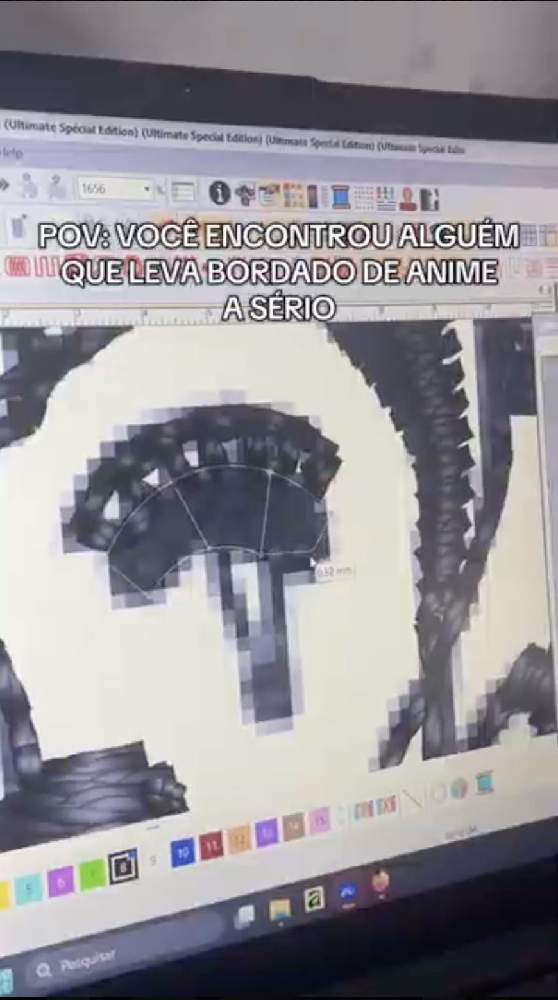
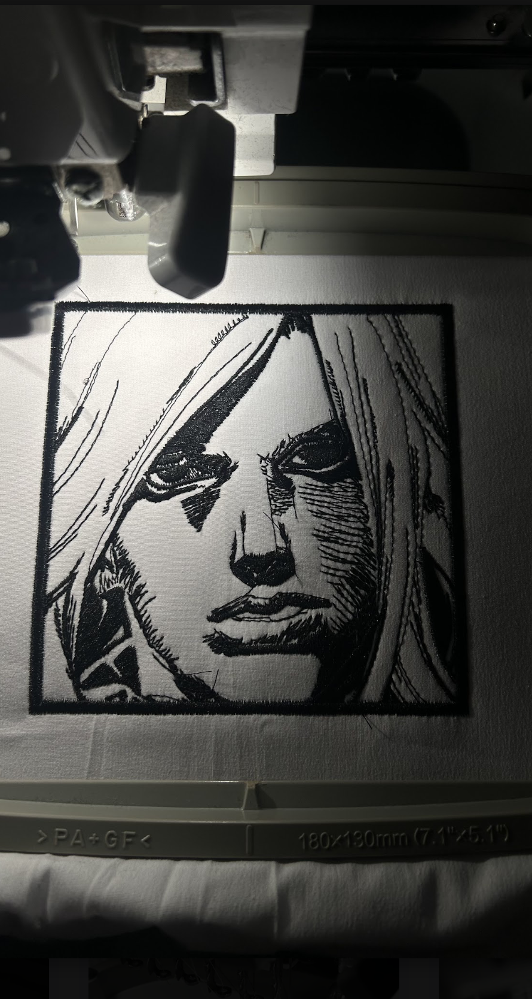
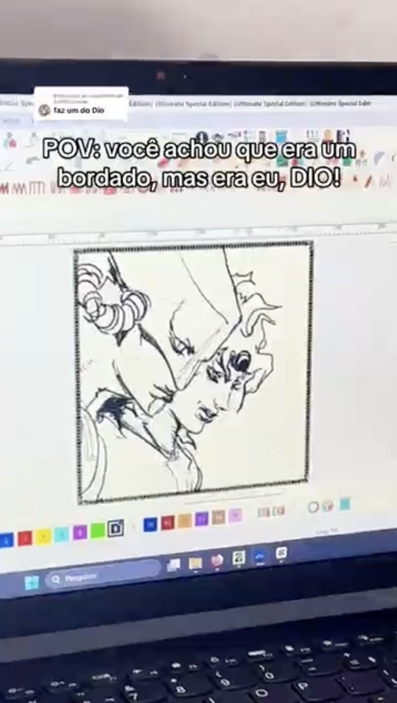
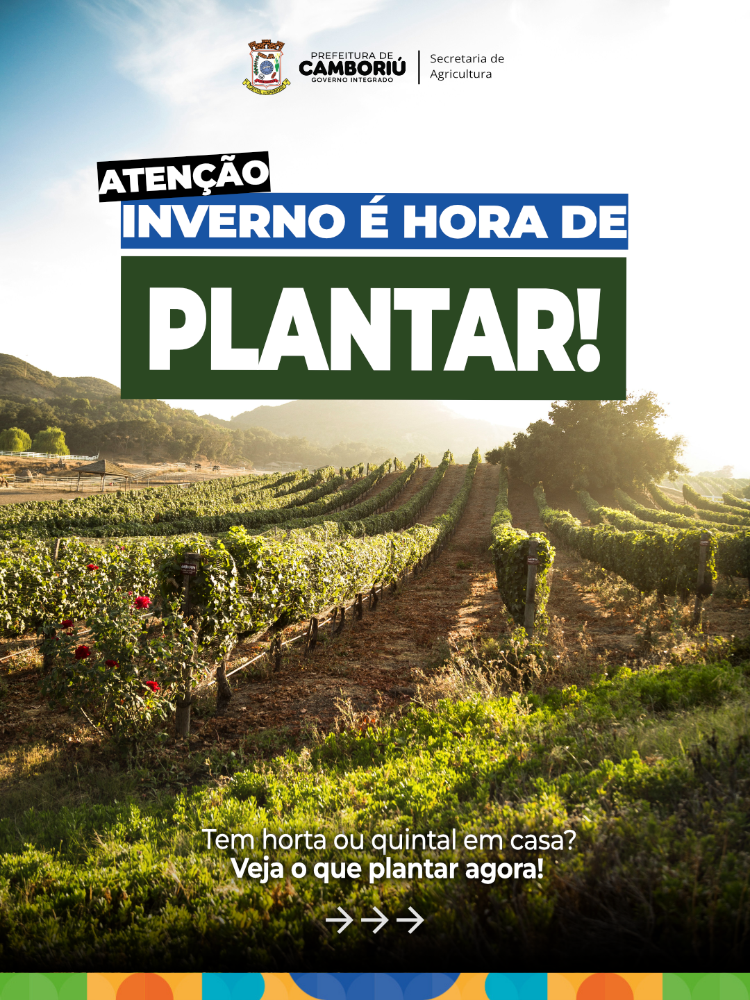
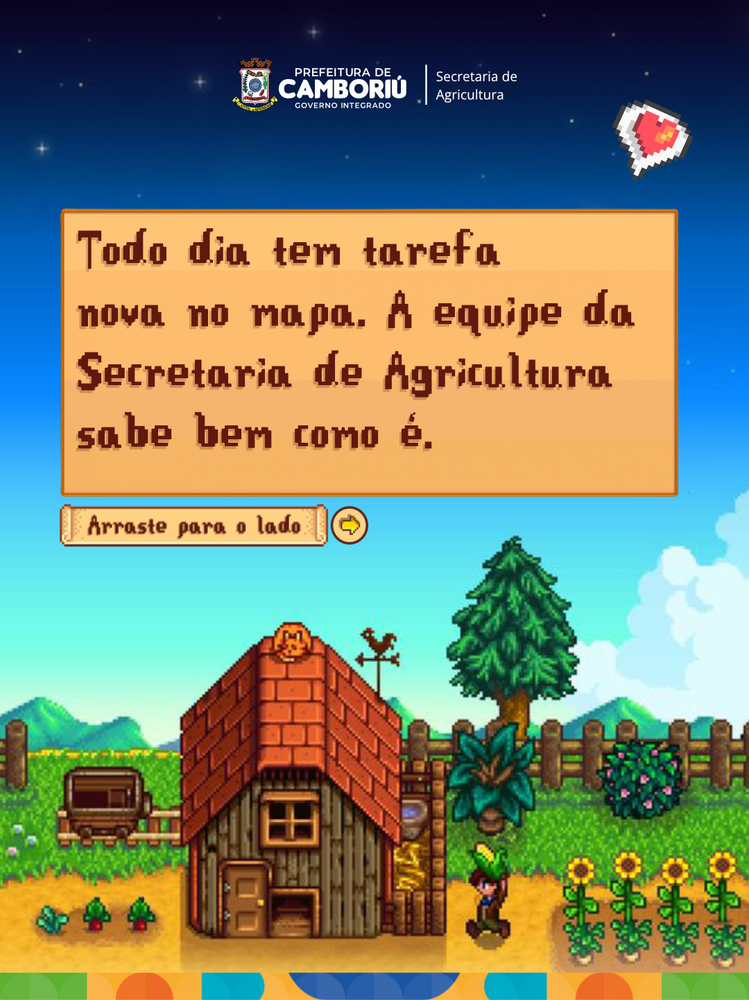
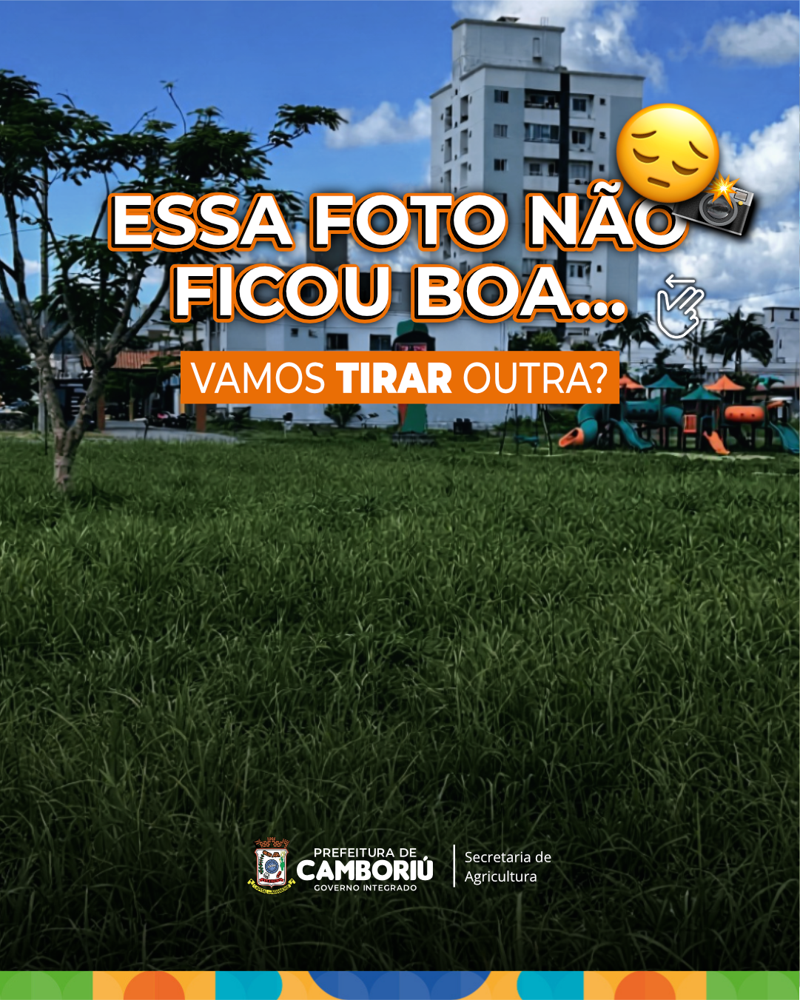

Social Media · Camboriú, SC — pensando estratégia antes de abrir o editor.
Passei 8 anos digitalizando bordados no computador, transformando imagem em ponto e calculando densidade de fio. Trabalhar com isso me ensinou a olhar primeiro pro formato e só depois pra estética, e foi essa lógica que carreguei pro social media.
Hoje cuido da comunicação pública da Secretaria de Agricultura de Camboriú e, ao mesmo tempo, monto canais de nicho do zero. São públicos e estratégias bem diferentes, tocados em paralelo.
Post bonito que não funciona não me interessa muito.
Quando anunciaram Steel Ball Run, a comunidade de JoJo entrou em polvorosa esperando o anime. Reparei que ninguém tinha aproveitado esse momento pra mostrar bordado e resolvi tentar.
A ideia era simples: bordar um personagem novo por semana, filmar o processo na máquina industrial e usar referências e memes da comunidade, incluindo locais reais como Floripa, como gancho de descoberta.
Chamei isso de Hype + Craft: aproveitar o timing do lançamento e sustentar com uma técnica de verdade por trás. O fã de anime compartilhava pela referência, o bordadeiro parava pra ver como era feito, e os dois públicos juntos puxaram o alcance orgânico pra cima.



O número que mais me chamou atenção foi a taxa de compartilhamento. Isso significa que as pessoas quiseram mostrar o vídeo pra alguém, e impulsionamento não compra esse tipo de comportamento.
É um perfil institucional de secretaria municipal, com público diverso, sem verba pra impulsionar e sem identidade de conteúdo definida quando entrei. O desafio era fazer um órgão público soar relevante sem perder a seriedade.
Passei a misturar três tipos de conteúdo: prestação de contas (obras, zeladoria, equipamentos), curiosidades locais que prendem quem ainda não segue a página, e datas comemorativas tratadas de forma mais humana. O Reel virou o principal motor de alcance, e o post que mais performou no período foi um vídeo de utilidade pública, com 729 compartilhamentos.
O algoritmo passou a distribuir a página como conteúdo de descoberta, e não como perfil institucional comum.



Com 87% do alcance vindo de quem não segue a página, o conteúdo está atraindo gente nova, e não só conversando com quem já acompanha. Isso mostra espaço real pra crescer rápido.
| TikTok — Canal próprio | Instagram — Secretaria | |
|---|---|---|
| Nicho | Anime + Bordado | Comunicação pública |
| Estratégia | Hype + Craft | Prestação de contas + Discovery |
| Alcance | 108 mil views | 270 mil views |
| Crescimento | +4.900% | +100% em seguidores |
| Destaque | 3.600 shares orgânicos | 87% de não-seguidores |
Formato, algoritmo e público mudam de um pra outro. O que não muda é entender o que as pessoas já querem ver e chegar lá antes delas.
Se você quer alguém que pensa estratégia antes de abrir o editor, me chama.